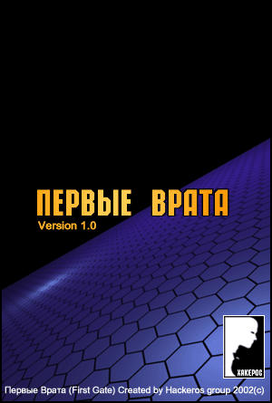
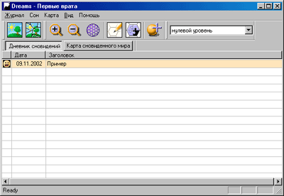
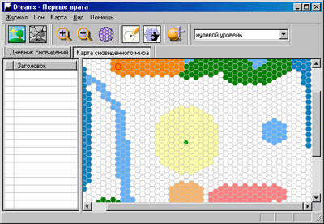
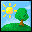
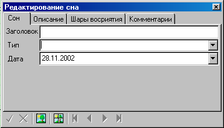
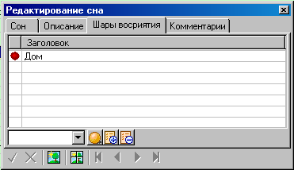
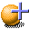
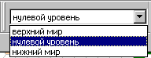
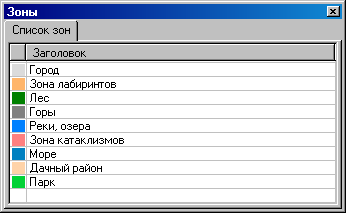

Первые Врата v1.0
Руководство пользователя
3.2 Добавление "шара всприятия"
3.3 Размещение "шара восприятия" на карте
3.4 Создание зоны
3.5 Разметка карты
Программа "Первые Врата" предназначена для ведения электронного дневника сновидений и создания карты сновиденного мира.
Подробнее о методе картографирования сновидений см. на сайте Хакеров сновидений
Программа рассчитана на работу в ОС Windows 98/ME/NT/2000/XP
Программа может находиться в двух режимах: режиме дневника сновидений и режиме карты сновиденного мира.
 Для переключения между режимами служат соответствующие кнопки на панели инструментов.
Для записи нового сновидения в дневник Вам необходимо выбрать пункт меню Сон->Новый или воспользоваться кнопкой на панели инструментов. 
При этом программа перейдет в режим дневника и Вы увидите окно для записи нового сновидения
Введите заголовок сновидения, его тип и дату. Далее перейдите на закладку описание и подробно опишите сюжет сна.
В нижней части окна находятся кнопки, позволяющие сохранить или отменить последние изменения. После ввода и сохранения описания сна, Вы можете перейти к редактированию списка "шаров восприятия". Для этого перейдите на закладку "Шары восприятия".
Здесь Вы можете создать новый шар, добавить или удалить шар из списка текущего сновидения.
Добавить новый шар восприятия можно непосредственно при редактировании сна или в любое другое время, воспользовавшись пунктом меню Карта->"Создать новый шар" или кнопкой на панели инструментов 
Введите название шара, его цвет и описание.
Перейдите в режим редактирования карты. В этом режиме окно делится на две части: в левой находится список неиспользованных шаров восприятия, а в правой - карта. Вы можете перетащить шар из списка и разместить его в любой свободной ячейке карты. Кроме того, имеется возоможность перемещать шар по карте, перетаскивая его мышью. Если вытащить шар за пределы карты, он вернется в список неиспользованных шаров.
Исключение составляет "Дом". Этот шар восприятия невозможно переместить или убрать с карты - он всегда в центре.
Вы можете изменить название или цвет шара, пользуясь контекстным меню, возникающем при нажатии правой кнопки мыши.
При наведении указателя мыши на шар, в нижней части экрана показывается его название и название зоны, в которой он размещен.
Перемещение по карте осуществляется при помощи полос прокрутки или мышью. Нажмите среднюю или левую (на пустой ячейке) кнопку мыши и, не отпуская, перемещайте мышь, карта будет прокручиваться. Для изменения масштаба карты воспользуйтесь кнопками панели инструментов с изображением линзы или клавишами "+"/"-".
Вы можете сделать многослойную карту. Выберете слой в выпадающем списке панели инструментов.
Для создания новой зоны воспользуйтесь пунктом меню Карта->"Новая зона" или кнопкой панели инструментов . Введите название, цвет и описание новой зоны.
Для нанесения зон на карту выберите пункт меню Карта->"Режим редактирование зон" или воспользуйтесь кнопкой панели инструментов . В этом режиме появляется окно со списком зон (рис 9.). Выберите зону и наносите ее на карту. Правая кнопка присваивает ячейке выбранную зону, левая - снимает зону с ячейки.
Для выхода из режима закройте окно со списком зон.
Всю информацию об ошибках необходимо направлять на e-mail: tdg_ru@mail.ru
В письме необходимо указать точную версию и номер билда программы, а также максимально подробное описание найденной ошибки.
По этому же адресу принимаются пожелания по улучшению программы, отзывы и пр.
Первые врата (First Gate) Created by Hackeros group (c) 2002